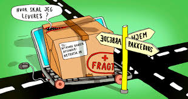
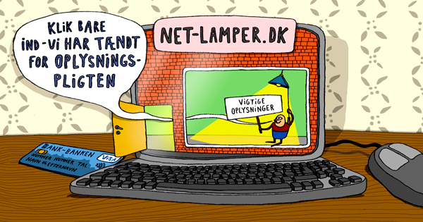

Kapitel 5 Forbrugeraftaler og forbrugerbeskyttelse
Indledningsvis skal du som studerende være særlig opmærksom på følgende problemstillinger ved gennemgangen af kapitlet “forbrugeraftaler og forbrugerbeskyttelse”:
• Forbrugerbeskyttelse ved erhvervelse af fast ejendom; fortrydelsesret og tilbud, tilbagekaldelse og sælgers accept, Lov om forbrugerbeskyttelse ved erhvervelse af fast ejendom (LFFE) kapitel 2
• Forbrugeraftaleloven, om det civilretlige forbrugerbegreb, om forbud mod uanmodet henvendelser og om forbud mod negativ aftaleindgåelse, jf. forbrugeraftalelovens §§ 3-6
• Fortrydelsesretten på 14 dage, forbrugeraftalelovens §§ 18-24
Introduktion til forbrugeraftaleloven:
Forbrugeraftaleloven, jf. Lov 2013-12-17 nr. 1457 om forbrugeraftaler, se nærmere forbrugeraftaleloven. Se Lovsamlingen klik her!
Samt Sonny Kristoffersen Karnovkommentar til forbrugeraftaleloven klik her!
Forbrugeraftalelovens (FBL) formål:.9
Forbrugeraftaleloven kan vel karakteriseres som forbrugernes grundlov. Eller angivet som “færdselsloven” for den erhvervsdrivende, hvordan den erhvervsdrivende skal behandle forbrugeren, når der indgåes forbrugeraftaler.
Forbrugeraftaleloven er “beskyttelsespræceptiv” – dvs. loven kan ikke fraviges til skade for forbrugeren, FBL § 33, men forbrugeren kan godt stilles bedre end, hvad lovgivningen tilsiger, fx 6 måneders fortrydelsesretten i forhold til den lovpligtige fortrydelsesret på 14 dage.
En forbrugeraftale indgås mellem to parter, hvor den erhvervsdrivende indgår aftalen som led i sit erhverv, mens den anden part (forbrugeren) handler hovedsagelig uden for sit erhverv, jf. FBL § 2, stk. 1.
Det kaldes for det civilretlige forbrugerbegreb.10
En erhvervsdrivende formidler er en, der skaber kontakt imellem private handlende, fx et internetauktionsfirma, som også skal overholde forbrugeraftaleloven.

Se sagen om QXL (internet-auktionsudbyder):
Se Sø- og Handelsrettens dom afsagt den 18. juni 2009 i sag N-1-07: QXL Ricardo Danmark A/S (QXL) er formidler som nævnt i forbrugeraftalelovens § 3, stk. 3, i forbindelse med salg på www.qxl.dk, når sælgeren er ikkeerhvervsdrivende, og køberen hovedsagelig handler uden for sit erhverv. QXL har derfor pligt til at give købere oplysning om fortrydelsesretten efter lovens § 11, stk. 1, nr. 5, og § 12, stk. 2, nr. 2, og til at modtage køberes underretning om brug af fortrydelsesretten efter lovens § 19, stk. 1. Ved ikke at have overholdt QXLs oplysningspligt efter forbrugeraftaleloven og ved ikke at have ført kontrol med, at erhvervsdrivende sælgere på deres website overholder deres pligter efter forbrugeraftaleloven, havde QXL handlet i strid med god markedsføringsskik, jf. markedsføringslovens § 3.
Se markedsføringsloven i Lovsamlingen klik her!
Den erhvervsdrivende, som påstår, aftalen ikke er en forbrugeraftale, har bevisbyrden, jf. FBL § 2, stk. 2.
Bedømmelsen i FBL § 2, stk. 2 beror på en konkret vurdering.
Se fx Forbrugerklagenævnets sagsnr.: 17/02094, hvorefter køb af tilretning af brudekjole ikke blev anset som forbrugerkøb: “… Det er den erhvervsdrivende, der skal godtgøre, at der ikke er tale om en forbrugeraftale (forbrugeraftalelovens § 2, stk. 2). Bedømmelsen beror på en konkret vurdering. Nævnet vurderer, at den erhvervsdrivende ikke kan anses for at være erhvervsdrivende, da der er tale om et civilt køb. Nævnet har ved afgørelsen lagt vægt på, at den erhvervsdrivende ikke er CVR-registreret, at hun ikke har fast forretningssted som skrædder, og at hun ikke markedsfører sig selv som skrædder. Herudover har nævnet lagt vægt på, at parterne må antages at have indgået aftalen på baggrund af et privat bekendtskab, og at det herved er uklart om tilretning af brudekjoler skulle ske mod betaling. Der er således ikke tale om et forbrugerkøb, og Forbrugerklagenævnet har derfor ikke kompetence til at behandle sagen”.
Forbrugerombudsmanden (FOB) tilsyn med at FBL overholdes.
De fleste konflikter afgøres af Forbrugerklagenævnet.11
5.1 Forbud mod uanmodet henvendelse

Der er et forbud mod uanmodet telefonisk eller direkte personlig henvendelse til forbrugere på deres bopæl, arbejdsplads, skoler, gymnasier, erhvervsakademier, universiteter eller andre steder, hvor der ikke er almindelig adgang, fx også foreninger, hvis henvendelsen fra virksomheden har til formål at opnå en aftale med forbrugeren, jf. FBL § 4, stk. 1.
Forbuddet er især begrundet med privatlivets fred og for at imødegå overraskelsesmomentet, så forbrugeren ikke føler sig tvunget til at indgå en aftale. Evt. aftaler der er indgået ved dørtrinet er ugyldige, jf. FBL § 5.
Undtagelserne finder vi i FBL § 4, stk. 2, hvorefter telefoniske henvendelse gerne må ske, hvis det handler om:
Bestilling af bøger,
Tegning af abonnement på aviser, ugeblade og tidsskrifter
Formidling af forsikringsaftaler og
Tegning af abonnement, der omfatter redningstjeneste eller sygetransport.
5.2 Telefonsalg
Ved telefoniske henvendelser omfattet af FBL § 4, stk. 2, om bestilling af bøger, abonnementer på aviser mv. skal forbrugeren ved hvert opkald have oplysning i telefonsamtalen om:
Den erhvervsdrivendes identitet.
Navnet på den person, som forbrugeren er i kontakt med i telefonen.
Telefonsælgerens forbindelse til den erhvervsdrivende, og
Det kommercielle formål med telefonhenvendelsen.

Virksomheden der gerne må ringe uanmodet, skal tjekke Robinson-listen inden henvendelse, ellers er det en overtrædelse af markedsføringslovens § 10, stk. 4, nr. 2 og 3.
Derudover gælder markedsføringslovens § 10, stk. 6:
“Den erhvervsdrivende skal derfor ved den første henvendelse til forbrugeren, oplyse denne om retten til at frabede sig uanmodede henvendelser fra den erhvervsdrivende i fremtiden”.
5.3 Salg uden for den erhvervsdrivendes faste forretningssted
Henvendelse fra en erhvervsdrivende må gerne ske:

På offentlige steder, hvortil der er almindelig adgang, fx gader, veje, pladser og andre steder som fx togstationer og restauranter.
Der kan dog være andre forbudsregler på de steder.
Til virksomheder og offentlige institutioner, hvis henvendelse vedrører tilbud om bestilling af varer og ydelser, der anvendes i virksomheden/institutionen.
På bopælen, hvis det ikke har med erhvervsmæssigt salg at gøre, fx henvendelser vedrørende religion, indsamlinger til velgørende formål (reguleret af indsamlingsloven), salg af lodsedler, spørgsmål i forbindelse med markedsundersøgelser mv.
5.4 Forbrugeraftalers ugyldighed og bødestraf
- Aftalen er ugyldig: Aftaler indgået i strid med FBL § 4 er ugyldige, jf. FBL § 5. Forbrugeren kan godt fastholde aftalen uanset ugyldighed.
Den erhvervsdrivende kan ikke påberåbe sig ugyldigheden.
Bødestraf: Det kan være forbundet med bødestraf, for virksomheden, at handle i strid med forbrugeraftaleloven, jf. FBL § 34 - se H&M sag om opringninger på mobiltelefoner.
Robinson-listen: En forbrugers tilmelding til Robinson-listen skal forhindre henvendelser fra virksomheder om produkter omfattet af FBL § 4, stk. 2. Overtrædelse straffes med bøde.
5.5 Forbud mod negativ aftalebinding (-aftaleindgåelse)
En forbruger kan som udgangspunkt ikke blive bundet ved sin passivitet, jf. FBL § 6.
Ses særligt inden for TV/sattelitaftaler,IT/internetforbindelser, avis- og bladabonnementer.
Hvis en forbruger modtager en vare fra en virksomhed, som forbrugeren ikke har bestilt, og det ikke skyldes en fejl, kan forbrugeren beholde varen uden at skulle betale.
Det samme gælder for tjenesteydelser/arbejde som en erhvervsdrivende udfører, uden at forbrugeren har bedt om det. Fx en vinduespudser, der går i gang med at vaske ens vinduer uden en aftale, er forbrugeren ikke bundet af.

Området er tæt forbundet med princippet om god markedsføringsskik, jf. markedsføringslovens § 3 og god erhvervsskik i markedsføringslovens § 4.
Det kan også være en vildledning af forbrugerens retsstilling, jf. markedsføringslovens § 5.
5.6 Aftaler indgået uden for den erhvervsdrivendes forretningssted
Aftalen er indgået et andet sted end der, hvor den erhvervsdrivende sælger har sit forretningssted, fx homeparties, salgsdemonstrationer under udflugter, udstilling/messe, marked.
Den erhvervsdrivende har pligt til at give tydelig skriftlig oplysning om fortrydelsesretten og hvortil henvendelse kan ske.
Oplysningen skal gives:
Ved mødet med forbrugeren.
Ved varesalg – når varen overgives eller leveres fysisk til forbrugeren.
Fortrydelsesfristen begynder først at løbe fra det tidspunkt, forbrugeren modtager oplysningerne, hvis de ikke modtages, så udskydes fortrydelsesfristens begyndelsestidspunkt med 12 måneder.
5.7 Fjernsalg
“Fjernsalg” er en aftale om salg af varer eller salg af tjenesteydelser, eller aftale om løbende levering af varer eller tjenesteydelser.
Aftalen indgås på afstand ved fjernkommunikation, fx e-handel, aftale indgået pr. e-mail, telefonsalg, katalog- og postordresalg.
Den erhvervsdrivende og forbrugeren mødes ikke fysisk ved aftalens indgåelse.
Forbrugeren har ikke haft mulighed for at afprøve eller undersøge salgsgenstanden.
Aftalen skal være indgået som led i et system for fjernsalg, og den skal drives af den erhvervsdrivende, fx en aftale om køb, indgået via virksomhedens hjemmeside.

I rimelig tid inden aftalen indgås, skal den erhvervsdrivende give forbrugeren oplysninger, fx om:
Den erhvervsdrivendes navn og forretningsadresse, tlf. numre, mailadresse m.v.
Varens eller tjenesteydelsens vigtigste egenskaber.
Den samlede pris, inkl. gebyrer, moms og afgifter, øvrige ekstraomkostninger, fx til levering, bestillingstakster, servicetakst.
Betalingsvilkår, leveringsvilkår, aftaleperiode, eventuel uopsigelighedsperiode og opsigelsesvilkår.
Oplysninger om, hvorvidt der er fortrydelsesret og hvordan den kan udøves, herunder om forbrugeren skal betale for tilbagelevering af en vare.
Oplysningerne skal være klare og forståelige.
Oplysningerne skal meddeles på papir eller andet varigt medium.
Snarest muligt efter aftalens indgåelse, skal der gives oplysninger om:
Fortrydelsesfristens begyndelsestidspunkt.
Betingelserne for at fortryde.
Fremgangsmåden ved forbrugerens brug af fortrydelsesretten og
Hvortil/til hvem fortrydelse kan meddeles.
Ved køb af varer som skal sendes til forbrugeren, skal oplysning om fortrydelsesfristen gives senest ved varens overgivelse.
Hvis oplysning først kommer frem senere, løber fristen, fra oplysningerne er modtaget.
Hvis der ikke modtages nogen oplysninger om fortrydelsesretten, så udskydes fortrydelsesrettens begyndelsestidspunkt med 12 måneder.
Hvis man slet ikke får oplysning om fortrydelsesretten, så er fortrydelsesfristen 12 måneder plus 14 dage.
Varer og ikke-finansielle tjenesteydelser:
Forsinkelse med levering

Hvis leveringstidspunkt ikke er aftalt: Varen/tjenesteydelsen skal leveres inden 30 dage fra bestillingen, jf. FBL § 27, stk. 1.
Forbrugeren kan hæve aftalen, hvis forsinkelsen er væsentlig for forbrugeren, og den erhvervsdrivende burde forudsætte dette.
Forbrugeren kan vælge at give en frist for levering, overholdes den ikke, kan aftalen hæves.
Hvis en aftale hæves, skal hver part tilbagelevere, hvad de hver især har modtaget.
Den erhvervsdrivende skal tilbagebetale penge til forbrugeren, senest 30 dage fra den erhvervsdrivende har modtaget besked om, at forbrugeren vil fortryde
5.8 Forbrugerens fortrydelsesret i forbrugeraftaleloven
“Fortrydelsesret” er en ret for forbrugeren til uden angivelse af begrundelse at træde tilbage fra en aftale, som ellers ville være bindende for forbrugeren.
Hovedreglen i dansk ret er, at der ingen fortrydelsesret er ved køb i den fysiske handel, medmindre den er aftalt mellem forbrugeren og den erhvervsdrivende, fx har Elgiganten en aftalt returret på 14 dage i sine fysiske butikker, som dog ikke må forveksles med den lovpligtige fortrydelsesret efter forbrugeraftaleloven.
Se her FBL § 18, stk. 1, hvor der er lovgivet om en fortrydelsesret i forbrugerkøb:
Forbrugeraftaler, der indgået ved fjernsalg, fx på nettet.
Forbrugeraftaler, der indgået uden for fast forretningssted, fx i Bellacenteret.
Fortrydelsesret: Andre særregler:
Fortrydelsesret ved køb af fast ejendom, jf. lov om forbrugerbeskyttelse ved erhvervelse af fast ejendom:
En køber kan fortryde et køb af en fast ejendom i 6 hverdage fra aftalens indgåelse mod samtidig betaling af en godtgørelse til sælger på 1% af den nominelle købesum, se nærmere ebogens kap. 21.
Fortrydelsesret ved indgåelse af forsikringsaftaler:
14 dage fra forsikringsaftalens indgåelse, dog 30 dage ved aftale om livsforsikring eller individuelle pensionsordninger, jf. FAL (forsikringsaftaleloven) § 34 i-k
Fortrydelsesfristen 14 dages beregning:
Fortrydelsesfristen beregnes fra forskellige tidspunkter, jf. FBL § 19, stk. 2 – aftale om køb af:
Tjenesteydelse – beregnes fra aftalens indgåelse.
Flere varer der leveres enkeltvis – beregnes når den sidste vare er i forbrugerens fysiske besiddelse.
Flere varer der leveres i partier – beregnes fra det sidste parti er i forbrugerens fysiske besiddelse.
–
Varer der leveres regelmæssigt over en periode – beregnes fra den første vare er i forbrugerens besiddelse.
Levering af vand, gas, elektricitet m.v. samt varer med digitalt indhold – beregnes fra aftalens indgåelse.
Den dag, hvor forbrugeren har modtaget de oplysninger om fortrydelsesret mv., som det påhviler den erhvervsdrivende at give forbrugeren på papir eller andet varigt medium.
Forbrugeren har således 14 dages fortrydelsesret i disse situationer:
Forbrugeraftaler indgået ved fjernsalg.
Forbrugeraftaler indgået uden for den erhvervsdrivendes forretningssted, fx på en messe i Bellacenteret.
Hvordan fortryder forbrugeren:
Forbrugeren skal meddele sin fortrydelse ved en utvetydig erklæring evt. bruge standardfortrydelsesformular.
Meddelelse om fortrydelse skal være afsendt inden fristens udløb.
Forbrugerne skal have sine penge tilbage.
Forbrugeren skal sende varen tilbage senest 14 dage efter, at den erhvervsdrivende har modtaget besked om fortrydelse.
Forbrugeren bærer risikoen for varen.
Ved værdiforringelse (forskellen mellem ny-pris og gensalgspris) skal forbrugeren betale.
Der kan fradrages i den købesum, den erhvervsdrivende skal tilbagebetale til kunden.
Retsvirkning ved fortrydelse:
Ved tilbagetræden fra aftalen inden fortrydelsesfristens udløb, bortfalder aftalen, og:
Hver part tilbageleverer ydelse/modydelse.
Hvis forbrugeren har betalt helt eller delvis, skal det modtagne tilbagebetales til forbrugeren.
Tilbagebetaling skal ske snarest muligt og senest 30 dage efter, at den erhvervsdrivende har modtaget forbrugerens meddelelse om ophævelse.
Den erhvervsdrivende kan vente, indtil varen er returneret, eller indtil forbrugeren har dokumenteret, at varen er tilbagesendt.
5.9 Fjernsalg - Finansielle tjenesteydelser
Oplysningspligten, jf. FBL § 14:

Den erhvervsdrivende skal bl.a. give oplysninger om:
CVR-nummer eller andet relevant identifikationsnummer.
Klageadgang og fremgangsmåden ved klage, herunder oplysning om en fysisk adresse.
Fortrydelsesfristens begyndelsestidspunkt, varighed og betingelserne for og fremgangsmåden ved brug af fortrydelsesretten.
Eventuelle særlige risici ved tjenesteydelsen som følge af ydelsens særlige karakter.
En eventuel lovvalgs- eller værnetingsklausul i aftalen.
Forbrugeren skal have oplysningerne på papir eller et andet varigt medie.
En manglende overholdelse af oplysningspligten kan straffes med bøde.
Fortrydelse - Fjernsalg af finansielle tjenesteydelser:
Finansiel tjenesteydelse:
- Enhver tjeneste, der har karakter af bank-, kredit, forsikrings-, individuel pensions-, investerings- eller betalingstjenesteydelse.
Fortrydelsesfristen:
Der er 14 dages fortrydelsesret fra aftalens indgåelse eller fra det tidspunkt, forbrugeren har modtaget oplysning om fortrydelsesretten.
Der er 30 dages fortrydelsesret ved aftaler om individuel pensionsordning, FBL § 19, stk. 1.
Fristerne skal beregnes i kalenderdage.
Tilbagebetale:
Den erhvervsdrivende skal tilbagebetale eventuelt modtagne beløb snarest muligt og inden 30 dage efter, forbrugerens underretning om fortrydelse er kommet frem.
Fjernsalg - Finansielle tjenesteydelser: Fremgangsmåde ved fortrydelse:
Der skal ske underretning til den erhvervsdrivende om, at forbrugeren vil bruge fortrydelsesretten.
Underretning skal være afsendt inden udløb af fortrydelsesfristen.
Forbrugeren har bevisbyrden for, at meddelelsen er sendt.
Meddelelsen om forbrugerens fortrydelse skal være utvetydig.
Der kan anvendes en standardfortrydelsesformular.
Fortrydelsesret ved køb af værdipapirer?
HR. Køb og salg af værdipapir er der tale om en finansiel fjernsalgsaftale og udgangspunktet er, at der er 14 dages fortrydelsesret. Den erhvervsdrivende skal på en synlig måde oplyse om, at der ikke ved købet af værdipapir er nogen fortrydelsesret.
U1. Der er ingen fortrydelsesret, jf. forbrugeraftalelovens § 18, stk. 2, nr. 15: ”aftaler om varer, værdipapirer eller tjenesteydelser, hvis prisen afhænger af udsving på kapitalmarkedet, som den erhvervsdrivende ikke har nogen indflydelse på, og som kan forekomme i fortrydelsesperioden”.
Bestemmelsen tilsigter dels at gennemføre direktivets artikel 16, litra b, dels at videreføre den tidligere forbrugeraftalelovs § 17, stk. 2, nr. 3, der undtog aftaler (både fjernsalgsaftaler og aftaler indgået uden for fast forretningssted) om værdipapirer eller finansielle tjenesteydelser, hvis værdipapirets eller tjenesteydelsens pris var afhængig af udsving på kapitalmarkedet, som leverandøren ikke havde nogen indflydelse på, og som kunne forekomme i fortrydelsesperioden, fra fortrydelsesretten.
Bestemmelsen indebærer, at reglerne om fortrydelsesret alligevel vil finde anvendelse på aftaler omfattet af lovens § 18, stk. 2, nr. 15, hvis der er tale om en aftale vedrørende en finansiel tjenesteydelse og denne aftale samtidigt er indgået uden for den erhvervsdrivendes forretningssted, jf. definitionen heraf i lovens § 3, nr. 2.
Der kan rejses spm. om der findes værdipapir, som ikke er afhængig af udsving på kapitalmarkedet. Det antages, at det ikke er tilfældet at der findes sådanne værdipapir. Ultrakorte obligationer (udløb om f.eks. 6 mdr.) bevæger sig kun meget, meget lidt. Guld går modsat - når aktier falder pga. uro stiger prisen på guld.
U2. Forbrugeraftalelovens § 18, stk. 3 gives der i visse situationer dog fortrydelsesret ved køb af værdipapir som er afhængig af udsving på kapitalmarkedet, som ikke er fjernsalgsaftaler ved køb af værdipapir uden for den erhvervsdrivendes faste forretningssted; fx salg af aktier og obligationer i Bellacentret vil der efter bestemmelsen i § 18, stk. 3 være en fortrydelsesret på købet af værdipapirer, så forbrugeren bliver beskyttet mod den aggressive sælger og for dermed at undgå overrumpling af forbrugeren med det personlige møde med sælgeren.
Forbrugeraftalelovens § 18, stk. 3, gælder aftaler vedrørende finansielle tjenesteydelser indgået uden for den erhvervsdrivendes forretningssted generelt, hvor der ikke er tale om en fjernsalgsaftale.
Køb af værdipapir i selve filialen er der ikke nogen fortrydelsesret, medmindre det aftales. For kreditaftaler er der 14 dages fortrydelsesret, jf. kreditaftalelovens § 19.
God skik, jf. lov om finansiel virksomhed, jf. 43 og MiFID reglerne skal der også være opmærksomhed på.
5.10 Urimelige aftaler
Urimelige aftaler kan tilsidesættes helt eller delvis eller ændres efter aftalelovens § 36. Se aftaleloven i Lovsamlingen klik her!
Generelle betragtninger- vurdering:
Hvis det er stridende mod hæderlig forretningsskik, jf. aftalelovens §§ 38 c, stk 1, jf. 36:
“En aftale kan ændres eller tilsidesættes helt eller delvis, hvis det vil være urimeligt eller i strid med redelig handlemåde at gøre den gældende. Det samme gælder andre retshandler. Stk. 2. Ved afgørelsen efter stk. 1 tages hensyn til forholdene ved aftalens indgåelse, aftalens indhold og senere indtrufne omstændigheder”.
Hvis der er i strid med redelig handlemåde.
Aftalelovens §§ 38 a – 38 d – særligt kapitel om forbrugeraftaler:
Ved tvivl om indholdet af en forbrugeraftale tolkes aftalen til fordel for forbrugeren (koncipistreglen), jf. aftalelovens § 38 b.
Aftaler skal være udarbejdet på en klar og tydelig måde, jf. aftalelovens § 38 b:
"Opstår der tvivl om forståelsen af en aftale, og har det pågældende aftalevilkår ikke været genstand for individuel forhandling, fortolkes vilkåret på den måde, som er mest gunstig for forbrugeren. Den erhvervsdrivende har bevisbyrden for, at et aftalevilkår har været genstand for individuel forhandling.
Stk. 2. En skriftlig aftale, der tilbydes forbrugeren, skal af den erhvervsdrivende være udarbejdet på en klar og forståelig måde".
Se retspraksis:
Se dommen i U 2005.2960 S om vilkår om forlængelse af abonnementsaftale medmindre forbrugeren opsagde inden 30 dage før abonnementsperiodens udløb, blev tilsidesat af Sø- og Handelsretten. Dommen klik her!
5.11 Løbende tjenesteydelser/abonnementer
En forbruger kan opsige en aftale om løbende levering af varer eller tjenesteydelser med 1 måneds varsel til udgangen af en måned, når der er gået 5 måneder efter aftalens indgåelse, jf. FBL § 28, stk. 1, fx abonnementslignende aftaler.
Se Forbrugerklagenævnets sagsnr.: 18/11554, hvor et vilkår om fysisk fremmøde for opsigelse af fitnessabonnement var urimeligt. I henhold til den erhvervsdrivendes aftalevilkår skulle opsigelse af fitnessabonnementet ske ved, at forbrugeren ved fysisk fremmøde i det center, hvor han var indmeldt, udfyldte af en blanket. Forbrugeren havde fremsendt sin opsigelse til den erhvervsdrivende per mail. Nævnet vurderede, at vilkåret om krav om fysisk fremmøde, som betingelse for opsigelse af fitnessabonnementsaftalen, måtte anses for at være urimeligt og lagde herved vægt på, at der som udgangspunkt ikke kan stilles formkrav til en opsigelse, og at der ikke foreligger oplysninger om saglige hensyn, der i tilstrækkelig grad kan begrunde vilkåret.
5.12 E-handelsretten
(Emnet er ikke pensum på finansøkonomuddannelsen)
En central lov for e-handelsretten er e-handelsloven (Lov nr. 227 af 22. april 2002 om tjenester i informationssamfundet herunder visse aspekter af elektronisk handel. E-handelsloven har gennemført dele af Europa-Parlamentets og Rådets direktiv af 2000-06-08om visse retlige aspekter af informationssamfundstjenester, navnlig elektronisk handel, i det indre marked (»Direktivet om elektronisk handel«) (2000/31).
Det er karakteristisk for en række informationssamfundstjenester, f.eks. internethjemmesider, at de har en grænseoverskridende karakter.
For at sikre den frie bevægelighed i det indre marked er det nødvendigt at fjerne visse retlige hindringer for påbegyndelse og udøvelse af informationssamfundstjenester gennem koordinering af medlemsstaternes lovgivning og at fastsætte visse minimumskrav for informationssamfundstjenester på fællesskabsplan.
Ved direktivet fjernes bl.a. retlige hindringer som følge af forskelle i nationale lovgivninger og usikkerhed om, hvilke nationale regler der finder anvendelse på informationssamfundstjenester.
Der er blevet indført et afsenderlandsprincip, jf. direktivets artikel 3 (lovens §§ 3-6), hvorefter leverandører af online-tjenester kan stille deres ydelser til rådighed overalt i EU på grundlag af de regler og den myndighedskontrol, der findes i den medlemsstat, hvori de er etableret.
Afsenderlandsprincippet gælder kun regler, der er omfattet af »det koordinerede område«, som er defineret i § 2, nr. 8.
Direktivet indfører ikke ny international privatret og berører ikke domstolenes kompetence, ligesom en række forhold og aktiviteterer holdt uden for direktivets anvendelsesområde.
Direktivets bestemmelser gælder som udgangspunkt for både erhvervsdrivende og forbrugere.
Visse af direktivets bestemmelser kan dog fraviges ved aftale i erhvervsforhold.
E-handelsdirektivet supplerer den generelle og sektorspecifikke EU-regulering, som gælder for informationssamfundstjenester.
Direktivet berører således en lang række områder, hvor der findes anden regulering, og som henhører under forskellige myndigheders kompetenceområde, f.eks. hvad angår etablering, markedsføring, rådgivning, aftaleindgåelse, ansvar og offentlig kontrol, jf. noterne til de enkelte lovbestemmelser.
Det overlades som udgangspunkt til medlemsstaterne at bestemme form og midler til gennemførelse af e-handelsdirektivet.
Da det i Danmark blev anset for uhensigtsmæssigt og omstændeligt at gennemføre direktivet ved ændring i anden lovgivning, er direktivet implementeret ved enselvstændig lov, hvis bestemmelser er formuleret, så de ligger tæt op ad direktivtekstens ordlyd med henblik på at sikre en så korrekt implementering som muligt.
Direktivets artikel 9 fastslår et »diskriminationsforbud«, som indebærer, at medlemsstaternes lovgivning som udgangspunkt ikke må indeholde formkrav, som hindrer elektronisk indgåelse af kontrakter, f.eks. krav om skriftlighed, underskrift, fremlæggelse af originale dokumenter mv.
Direktivets artikel 9 tager ikke stilling til de bevisspørgsmål, som brugen af elektroniske medier ved bl.a. aftaleindgåelse kan give anledning til.
De bevismæssige spørgsmål angår bl.a., om der kan opnås tilstrækkelig sikkerhed for, at en meddelelse faktisk stammer fra den angivne udsteder (meddelelsens autenticitet og uafviselighed), og at meddelelsens indhold ikke er ændret efter, at den er afsendt (meddelelsens integritet).
Se også lov om elektronisk signatur og Betænkning 1456/2004 om e-signaturs retsvirkninger, Betænkning 1400/2000om e-signatur og formkrav i lovgivningen og Beretning 1517/2010 om elektronisk aftaleindgåelse og handel, s. 12 f. og 17 f.
I forbindelse med den danske gennemførelse af e-handelsdirektivet blev det besluttet ikke at implementere artikel 9 som en selvstændig bestemmelse i e-handelsloven, men derimod at iværksætte et tværgående lovmoderniseringsarbejde, som tog sigte på at ændre eller ophæve formkrav mv. i lovgivningen, som unødigt hindrede brugen af digital kommunikation.
Hvert ministerium blev pålagt at gennemgå sin egen lovgivning med henblik på at finde frem til de relevante bestemmelser og fastsætte en nærmere plan for lovmoderniseringen.
Ved afgørelsen af, om en elektronisk meddelelse kan opfylde evt. formkrav i lovgivningen, tages udgangspunkt i princippet om »funktionel ækvivalens«, jf. nærmere Betænkning 1400/2000 om e-signatur og formkrav i lovgivningen, s. 102 ff.
Heri ligger en vurdering af, hvilke formål de pågældende formkrav tilsigter at varetage, og hvorvidt en elektronisk meddelelse kan opfylde formkravene.
Der kan grundlæggende være tale om fire formål:
at sikre bevis for en aftales eksistens og indhold, jf. ovenfor om sikring af meddelelsens autenticitet/uafviselighed og integritet,
at varetage en beskyttelses-/advarselsfunktion,
at indskærpe afgiveren af erklæringen en vis højtidelighed eller alvor, og/eller 4) at sikre dokumentets negotiabilitet.
Medlemsstaterne kan i henhold til direktivets artikel 9, stk. 2, helt eller delvist undtage bestemte kategorier af kontrakter fra artikel 9’s anvendelsesområde.
Det gælder
kontrakter om rettigheder over fast ejendom,
kontrakter, der kræver medvirken af offentlige myndighed,
kontrakter om kaution og sikkerhedsstillelse fra personer, der handler uden for deres erhvervsmæssige virksomhed, samt
familieretlige og arveretlige aftaler. Medlemsstaterne skal meddele Kommissionen, hvilke af de nævnte undtagelser der udnyttes, samt hvert femte år aflægge rapport til Kommissionen om begrundelse for undtagelsen af kontrakter, der kræver medvirken af offentlig myndighed.
E-handelsloven i en praksisnær kontekst
E-handelslovens regler gælder for en webshop og hjemmeside.
Når man driver en netbutik, skal man overholde e-handelsloven. Man skal fx vise tydeligt, hvem man er, og der skal være tydelighed omkring ens salg og ens priser. Herunder skal bestillingsprocedure være klart kommunikeret til ens kunder.
Ufravigelige krav til e-handel
E-handelsloven indeholder nogle minimumskrav for e-handel, som virksomheden, ikke kan fravige, når der sælges online til forbrugere.
Reglerne gælder uanset, at man har aftalt noget andet med ens kunde.
Man skal blandt andet:
Give nogle generelle oplysninger om ens virksomhed.
Udforme reklamen, så den kan identificeres som reklame.
Give nogle tekniske oplysninger i forbindelse med, at man indgår aftalen.
Give en elektronisk ordrebekræftelse.
Virksomheder, der handler med hinanden via e-handel, kan indbyrdes aftale at fravige enkelte bestemmelser i e-handelsloven.
Fx kan bestemmelsen om at give en elektronisk ordrebekræftelse afviges, hvis det er skrevet ind i salgsbetingelserne.
E-handelslovens bestemmelser supplerer reglerne i markedsføringsloven og forbrugeraftaleloven, så dem er det også vigtigt, at man sætter sig ind i.
Forbrugerombudsmanden fører tilsyn med, at virksomheder overholder loven.
Man har en generel oplysningspligt, hvilket betyder, at man altid skal synliggøre visse oplysninger om ena virksomhed.
Virksomhedens webshop og hjemmeside skal som minimum give sine kunder lettilgængelig viden om ens virksomheds:
Fulde registrerede navn.
Fysiske etablerings-/forretningsadresse.
E-mailadresse.
CVR-nummer.
Tilhørsforhold til eventuelle godkendelses- og mærkningsordninger.
Speciel oplysningspligt for lovregulerede erhverv.
Priser og intention om salg skal stå tydeligt.
Man skal angive prisen for en vare eller tjenesteydelse, klart og tydeligt.
Det skal også fremgå, om prisen er inklusive afgifter og leveringsomkostninger.
Man skal udforme og præsentere al kommerciel kommunikation, så det er tydeligt for forbrugerne, at der er tale om reklame, dvs. at man ønsker at sælge varer eller tjenesteydelser.
Det skal tydeligt fremgå, hvem der er afsender.
Betingelser for deltagelse i konkurrencer og spil og benyttelse af reklametilbud, som fx rabatter, tilgift og gaver skal også være let tilgængelige og fremlagt klart og tydeligt.
Krav om let forståelig information om bestilling.
Man skal tydeligt, klart og forståeligt informere om:
De forskellige tekniske led, fx bestillingsproceduren, i forbindelse med kontraktens indgåelse.
hvorvidt virksomheden opbevarer den indgåede kontrakt, og hvordan den eventuelt er tilgængelig.
De tekniske hjælpeværktøjer til at finde og rette indtastningsfejl.
De sprog, kontrakten kan indgås på.
Webshoppens tekniske funktioner skal være kundevenlige.
Private forbrugere skal have mulighed for at afgive en korrekt ordre, når de bestiller varer via ens hjemmeside.
Man skal derfor sørge for, at hjemmesidens funktioner er så kundevenlige, at det er muligt for dem at finde og rette indtastningsfejl, så de ikke kommer til at bestille varer, de ikke ønsker.
Man skal også stille kontraktbetingelser og generelle salgsbetingelser til rådighed på en sådan måde, at ens kunder har mulighed for at lagre eller kopiere dem.
Man skal uden unødig forsinkelse, elektronisk bekræfte modtagelsen af en elektronisk ordre.
Særligt for handel via online markedspladser:
Markedsplatforme har en stigende rolle på markedet, og man bør derfor som e-handelsvirksomhed gøre sig tanker om fordele og ulemper ved at udbyde ens produkter på en online markedsplatform.
Markedsplatforme formidler typisk blot kontakten mellem sælger og køber.
Selve aftalen om køb bliver indgået direkte mellem parterne.
Normalt vil det være lovgivningen i det land, som platformen betjener, der vil være gældende for købsaftalen.
Quiz om e-handel
Kan du fortryde dit køb, når du handler på nettet? Hvad gælder for levering? Og hvad kan du gøre, hvis varen ikke dukker op? Tag quizzen fra forbrug.dk, og få svar.
Nethandel #heltsikkert giver dig én samlet indgang til information om, hvordan du handler sikkert på nettet, og hvad du kan gøre, hvis det er gået galt.
Se regler om nethandel klik her!
Videoer om forbrugerforhold
Quiz om e-handel og rejser

Bestiller du rejser på nettet? Der gælder særlige regler ved handel på nettet, som du skal være opmærksom på. Få styr på reglerne med forbrug.dk’s quiz.
Quiz om elektronik
I forbrug.dk’s quiz kan du teste, hvad du har ret til, hvis dit elektroniske udstyr, fx dit kamera, din computer eller din mobiltelefon, går i stykker. Tag testen her.
Quiz om forbrugerrettigheder
Har du styr på, hvad du har ret til som forbruger? Jo mere du ved, jo bedre er du klædt på, når du står i butikken eller handler på nettet. Test din viden her.
Quiz om kopivarer
Har du styr på, om du må eje kopivarer i Danmark? Eller om du må tage dem med hjem fra et andet land? Prøv forbrug.dks quiz om kopivarer, og bliv klogere her.

Følgende afsnit om forbrugeraftaler bygger på Sonny Kristoffersen: ”Kend forbrugerkøbsreglerne”, 2018, Samfundslitteratur.↩︎
Se Sonny Kristoffersen artikel i U.2011B.258: Afgrænsning af det civilretlige forbrugerbegreb, klik her!↩︎
Se nærmere Sonny Kristoffersen Ph.D-afhandling fra 2015: “Det offentlige forbrugerklagesystem i et retssikkerhedsmæssigt perspektiv”, 2019, Samfundslitteratur.↩︎